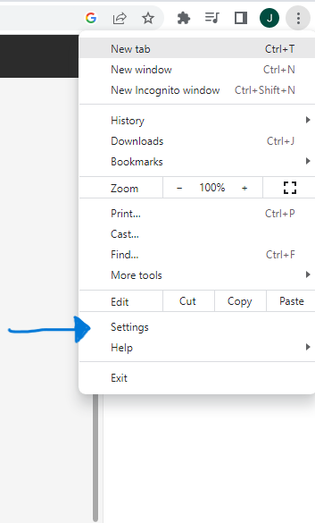

Step 2.)
If you don`t have google chrome installed, go here to download it..... If it is installed check your current version go to your setting and check what version youre running.


There`s a few simple steps to download and make sure you have this set up properly.
Step 2.)
If you don`t have google chrome installed, go here to download it..... If it is installed check your current version go to your setting and check what version youre running.
Step 3.)
Go to the link provided and download the driver that matches your version of chrome. This is what allows the program to interact with your browser and get your prices for you.


This is made by google and lets the automation process happen. It is important to keep this chromedriver updated along side your browser or the estimating tool will not work.
Step 4.)
Download a VPN if you dont have one already. It`s important to practice safe cyber security. IET reccomends using Proton VPN